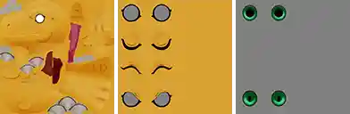
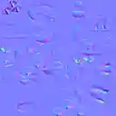
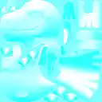
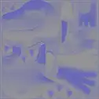
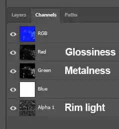
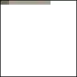
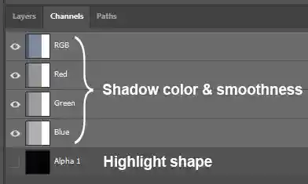
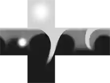
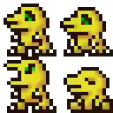
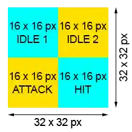

Digimon Time Stranger Textures
All the textures are located in the "images" folder.
Although they use the .img extension, they are actually .dds files with the wrong file extension. To edit them, simply rename each file and change its extension .dds.
Example: chr050a01.img → chr050a01.dds
Changing the texture format back to .img after editing them is not required. The game can read them as .dds.
Info
If you can't see file extensions, open Windows Explorer and go to View → Show → File name extensions.
Tools
- Paint.net, to convert images to dds. You can use other programs, but this one has all the settings we need for Time Stranger.
- Any image editing tool, like Photopea (free), Gimp (free), Affinity (free) or Adobe Photoshop (paid).
- If you want a lightweight dds image viewer, install IrfanView (+ plugins). It can read dds files with img extension without having to rename them. To turn off the "incorrect extension" popup, go to
Options → Properties/Settings → File Handling → Ask to rename if incorrect extension. - To batch-rename files, you can use Advanced Renamer.
Info
In order open dds files with Photoshop, you must install the Nvidia Texture Tools Exporter plugin
Texture sizes
- Textures dimensions must be a power of 2 (256x256 px, 512x512 px, 1024x1024 px, 2048x2048 px, etc).
- Usually, smaller Digimon (Babies and Rookies) use 1024×1024 px textures, while larger Digimon use 2048×2048 px textures. However, some Digimon break this pattern. For example, Monochromon uses 1024×1024 px textures. Ultimately, the choice is up to you.
- Dot sprites are 32x32 px.
- Profile pictures are 512x512 px.
The DDS format
.dds textures have three crucial parameters: compression, encoding and mipmaps.
Compression
There are mainly three compression methods:
- BC1: small file size, low quality, transparency with jagged edges.
- BC7: big file size, best quality, smooth transparency.
- None: only used by dot sprites.
Whether to use BC1 or BC7 depends on your needs. If a texture has transparency, use BC7, otherwise, use BC1. Avoid using BC7 textures whenever possible, since they are are twice the size of BC1 textures, and in most cases, you will barely notice the difference.
Learning how to optimize your mods is key, since as you continue adding content, the file size can increase considerably.
Encoding
.dds files have two encoding methods:
- sRGB: used for colors (base color, emission map and environment map).
- Linear: used for UI and data (normal maps, light maps, etc.).
Using the wrong encoding results in bright or washed-out colors, or in textures not appearing at all.
Mipmaps
Mipmaps are smaller versions of the texture stored inside the .dds file. They make the game use less RAM, and prevent jagged lines and shimmering when an image is scaled down or tilted. However, they increase the file size.
Using mipmaps is optional, but highly encouraged for icons and profile pictures.
Texture types
| Texture | Sufix | Compression | Encoding | Mipmaps |
|---|---|---|---|---|
| Base color | - | BC1 or BC7 | sRGB | Optional |
| Normal map | n | BC1 or BC7 | Linear | Optional |
| Light map | l | BC1 or BC7 | Linear | Optional |
| Material map | m | Always BC7 | Linear | Optional |
| Emission map | em | BC1 or BC7 | sRGB | Optional |
| Shadow map | s | BC7 | linear | Optional |
| Environment map | env | BC1 | sRGB | Optional |
| Dot sprite | - | B5G5R5A1 | Linear | No |
| Profile picture | - | BC7 | linear | Always |
| Icons and UI | - | BC7 | linear | Optional |
Base color/Diffuse map

Agumon's base color textures (chr050a01.img, chr050b01.img and chr050p01.img).
| Compression | Encoding | Mipmaps |
|---|---|---|
| BC1 or BC7 | sRGB | Optional |
Also called diffuse texture or diffuse color.
It contains basic colors, with minimal lighting and effects. For most recolors, you will only edit this texture. Some models have multiple color textures. For example, Agumon has three: one for the body, one for the eye lids and one for the iris.
The color of the texture can also be adjusted with the "DSTS-DiffuseAlpha" material node in Blender (it has 4 values, representing red, green, blue and alpha values).
Normal map
Textures ending with "n".

Agumon's normal map texture (chr050a01n.img).
| Compression | Encoding | Mipmaps |
|---|---|---|
| BC1 or BC7 | Linear | Optional |
Creates the illusion of bumps and other fine details without adding extra geometry. It's not much different from normal maps in other games. For a more detailed explanation, check out this Wikipedia article.
We usually don't modify these textures unless we're creating new models. To generate custom Normal Maps, you can use NormalMap Online or Gimp (filter → generic → normal map).
Light map
Textures ending with "l".

Agumon's light map texture (chr050a01l.img).
| Compression | Encoding | Mipmaps |
|---|---|---|
| BC1 or BC7 | Linear | Optional |
Controls the intensity and position of lights and shadows. It's usually a black and white version of the base color texture in the red channel (with some extra contrast), and the other channels completely white, giving a cyan look.
Here's a video showing how to create a light map using Photoshop or Photopea (you can use any image editing software):
Steps
- Add a hue/saturation adjustment layer and set the saturation to -100.
- Make the dark parts darker and the white parts lighter. You can use a "levels" adjustment layer or a "brightness/contrast" adjustment layer.
- Add a "channel mixer" adjustment layer. Set the green constant to +200 and the blue constant to +200.
- Save the image.
Material map
Textures ending with "m" (not to be confused with emission maps, which end with "em").

Agumon's material map texture (chr050a01m.img).
| Compression | Encoding | Mipmaps |
|---|---|---|
| Always BC7 | Linear | Optional |
- The "red" channel of the texture controls glossiness.
- The "green" channel of the texture controls metallic reflection.
- The "blue" channel is unknown. It's only used by a handful of models, such as Matadormon (chr031), and editing it doesn't appear to have any visible effect.
- The "alpha" (or "transparency") channel of the texture controls rim light intensity.

All three effects can be used simultaneously.
Glossiness
Also called "specular", "reflectiveness" or "reflectivity". Adds a simple reflection to the material. The shape of the highlight is controlled by the shadow map. Areas painted white on the texture are reflective, while areas painted black have no reflections. This is commonly used for materials such as teeth, leather, horns, and claws.
Glossiness examples
{kind=link}
(Default material map: zipper, nose and claws are glossy)
{kind=link}
(Custom material map: Full body is glossy)
Metallic reflection
Adds a metallic effect to the material by using environment maps. Areas painted white on the texture appear metallic, while areas painted black have no metallic reflection.
Metallic reflection examples
(Default material map: only the zipper is metallic)
{kind=link}
(Custom material map: full body is metallic)
Rim light intensity
Controls the opacity of the rim light that appears around the model, also known as Fresnel effect or inner glow. Areas painted white on the texture have a fully visible rim light, while areas painted black have no rim light. Most models use dark gray values in the alpha channel, making the rim light only slightly visible.
Rim light examples
(Default material map: rim light barely visible)
{kind=link}
(Custom material map: rim light fully visible)
The color of the rim light can be adjusted in Blender using the "DSTS-InnerGrowBColor" material node. It has three values representing the red, green, and blue channels.
The size of the rim light can also be adjusted in Blender using the "DSTS-InnerGrowABase" material node.
Video
Here's a video showing how to create a material map (where Agumon has glossy and metallic nails and teeth) using Photopea (you can use any image editing software):
Steps
- Open the image and create a folder for each channel. In this example, create an "Alpha" folder and a "Red & Green" folder, since the red and green channels will be identical.
- In the Alpha folder, add a "hue/saturation" adjustment layer and set the saturation to -100.
- Add a "brightness/contrast" adjustment layer and darken the image.
- Press Ctrl+Alt+Shift+E to create a merged copy of all the previous layers on a new layer.
- Select and copy the new layer.
- Create a new document to use as the material map.
- Create a new alpha channel in the new document and paste the layer we previously copied.
- Return to the original image, delete the merged layer and hide the "Alpha" folder.
- Select the "Red & Green" folder, then create a new layer and paint black over any areas that shouldn't be reflective. In this case, the entire body except for the nails and teeth.
- Add a "hue/saturation" adjustment layer and set the saturation to -100.
- Press Ctrl+Alt+Shift+E to create a merged copy of all the previous layers on a new layer.
- Select and copy the new layer.
- Switch to the new document and paste the layer into the Red and Green channels.
- Export the image, making sure the "Extra channel as opacity" option is checked.
Emission map
Textures ending with "em" (not to be confused with material maps, which end with "m").
Omnimon Alter-B's emission map (chr693a02em.img).
| Compression | Encoding | Mipmaps |
|---|---|---|
| BC1 or BC7 | sRGB | Optional |
Tells a material which parts of its surface emit light. The color of each pixel determines the color of the emission. Areas painted black on the texture have no emission.
{kind=link}
Left: without emission map. Right: with emission map.
The color of the emission can also be adjusted using the DSTS-EmissiveIntensity material node in Blender. It has three values representing the red, green, and blue channels.
Shadow map
Textures ending with "s".

Agumon's shadow map texture (chr050a01s.img).
| Compression | Encoding | Mipmaps |
|---|---|---|
| Always BC7 | Linear | Optional |
The RGB values of the texture control shadow color and smoothness. The alpha channel controls the shape of the highlight when the material is glossy.

Shadow color
The left edge of the texture defines the shadow color, while the right edge defines the light color.
{kind=link}
Shadow smoothness
Shadow maps typically use three colors to achieve a cel-shaded look. More detailed gradients produce smoother or more realistic shadows.
{kind=link}
Highlight shape
The alpha channel (transparency) of the shadow map is used to generate the highlight shape. It is wrapped around a sphere, so a straight line at the top creates a circular highlight. Custom shapes can be added to generate unique highlight effects.
{kind=link}
Environment map
Textures ending with "env".

The environment map used by most models (chr_env.img).
| Compression | Encoding | Mipmaps |
|---|---|---|
| BC1 | sRGB | Optional |
Used when a material has metallic reflections to generate a "chrome" effect. These are special panoramic images made from six squares, each representing a different direction (front, back, left, right, up, down). They wrap around the character and simulate an environment for the reflection.
The size of these textures must be 512x384 px, and the "Cube Map from crossed image" option must be checked in Paint.net when exporting the image.
Tip
{kind=link}
You can use environment maps to make cool effects, like iridescent materials.
Dot sprite

Agumon's dot sprites (dot050.img).
| Compression | Encoding | Mipmaps |
|---|---|---|
| None (B5G5R5A1) | Linear | No |
These sprites appear in the summary screen's evolution history, in the Field Guide, and when a Digimon is affected by Crystallization.
The compression setting in Paint.net is B5G5R5A1, but it can also be set to B8G8R8A8 (referred to as "compression: none" by Gimp and Photopea) and the game reads them anyway, although the file size is larger (2 kb vs 4 kb).

Dot sprite textures are divided in four sections of 16 x 16 px each: top right and top left contain the idle animation. The bottom-left section contains the attack animation, while the bottom-right section appears when the Digimon is hit by an attack.
Profile picture
Agumon's profile picture (ui_chara_icon_1050.img).
| Compression | Encoding | Mipmaps |
|---|---|---|
| Always BC7 | Linear | Always |
Used to represent a Digimon in the UI (turn order, box, Field Guide and so on).
Here's a video showing how to create the glitch effect for a custom profile picture using Photopea or Photoshop:
Steps
- Add a cyan color layer (like #7fadad) and move it to the background.
- Duplicate the color layer and put it on top of the main image with ~45% opacity and "color" blend mode to give a faded look.
- Duplicate the main image, right click on it, go to Blending Options and uncheck the green channel.
- Select the move tool and use the arrow keys (Down Right) to move the copy 5 pixels down and 5 pixels to the right.
- (optional) Adjust brightness, contrast or other features if necessary. In this case, I made darker colors slightly lighter.
- (optional) Add a shadow to the main image (normal blend mode, full opacity, max "spread", size "0").
- Convert the main image into a smart object (so the shadow is included when making the selection in step 8).
- Select the pixels of the main image, create an alpha channel (transparency) and fill the selection with white.
- Save the image ("extra channel as opacity" must be checked)
This video shows how to remove the glitch effect from an existing profile picture using Photopea or Photoshop:
Steps
- Duplicate the image.
- Right click on it, go to Blending Options and uncheck the green channel.
- Select the move tool and use the arrow keys (Up Left) to move the copy 5 pixels up and 5 pixels to the left.
Icons and other UI elements
HP Capsule item icon (ui_icon_item_040.img).
| Compression | Encoding | Mipmaps |
|---|---|---|
| Always BC7 | Linear | Optional |
Icons should always have mipmaps enabled. Other UI elements (splash screens, Jogmon cards, minimaps, and so on) should have mipmaps enabled only if they're scaled down. Mipmaps help keep them looking smooth at different sizes.